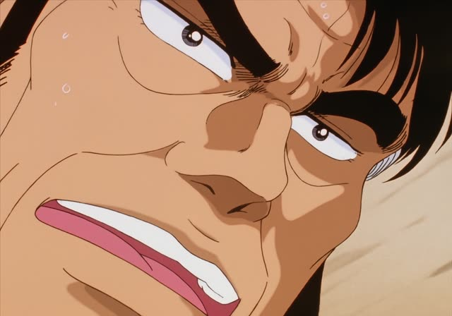
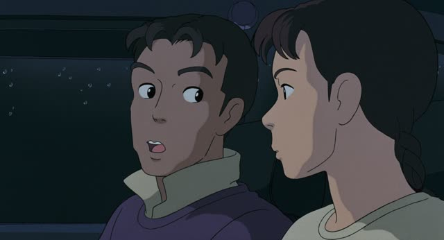

はずがない
| Polite | ～はずがありません |
|---|---|
| Casual | ～はずがない・～はずない |
Same meaning: "there's no way". Only the politeness changes.
Noun before it? Add の. な-adjective? Add な.
| Word | Add | Ending | ||
|---|---|---|---|---|
| Noun | 学生 | の | はずがない | He can't be a student |
| な-adjective | 静か | な | はずがない | It can't be quiet |
| Verb | 行く | – | はずがない | There's no way he's going |
| い-adjective | 高い | – | はずがない | It can't be expensive |
Shirokuma Cafe · Episode 18
けど 他のラマたちはいるはずがありません
"But the other llamas couldn't possibly be there."
はずがない means "there's no way", "it can't be": from what you know, it's impossible. It's the strong opposite of はず ("should be").
It joins like はず: verbs and い-adjectives as they are, nouns with の, な-adjectives with な. On this card, the llama tells a spooky story: he felt something nearby, but the other llamas couldn't be there.
In speech the が often drops: はずない. そんなはずない means "that can't be!".

Oishinbo · Episode 10
そんなゲテモノが うまいはずがない！
"There's no way junk like that tastes good!"
On this card, Kaibara refuses to believe the strange dish could be tasty, without even trying it.
Quick Examples
Someone says the quiet new student is a famous singer.
彼が歌手のはずがない。
"There's no way he's a singer."
Noun + の.
CasualA coworker thinks the shop is closed on Sundays.
日曜日に休みのはずがありません。
"It can't be closed on Sunday."
PoliteYour friend says the exam will be easy.
簡単なはずないよ。
"No way it's easy."
な-adjective + な, and が dropped.
CasualWith and without
彼は来るはずだ。
He should come. You expect it.
彼は来るはずがない。
There's no way he'll come. You're sure he won't.
Examples from Media

Only Yesterday
第一 みんなと握手なんて したいはずないじゃないですか
"Besides, there's no way he'd want to shake hands with everyone, right?"
はずない (no が) plus じゃないですか: "obviously not, right?".
Death Note · Episode 1
命なのに… 軽いはずがない
"It's a life... it can't be light."
After an い-adjective.
Slam Dunk · Episode 43
負けるはずがねえ
"No way we'll lose!"
ねえ: rough casual ない.
Princess Mononoke
逃げるはずがない
"He'd never run away."
Porco Rosso
そんなはずはないわ ポルコは いい人だもの
"That can't be. Porco is a good person."
はずはない: は instead of が, same meaning.
1 Litre of Tears · Episode 2
そんなはずないだろ、お前。
"That can't be true, come on."
だろ makes it "you know that!".
Dungeon Meshi · Episode 17
違う！ そんなはずない
"No! That's impossible!"
The Wind Rises
やっぱりな 新米にやらせるはずがないさ
"Figures. No way they'd let a rookie do it."
さ: casual, a bit offhand.
Further Reading
Tae Kim's Guide to Japanese Grammar
Things that should be a certain way · Using 「はず」 to describe an expectation